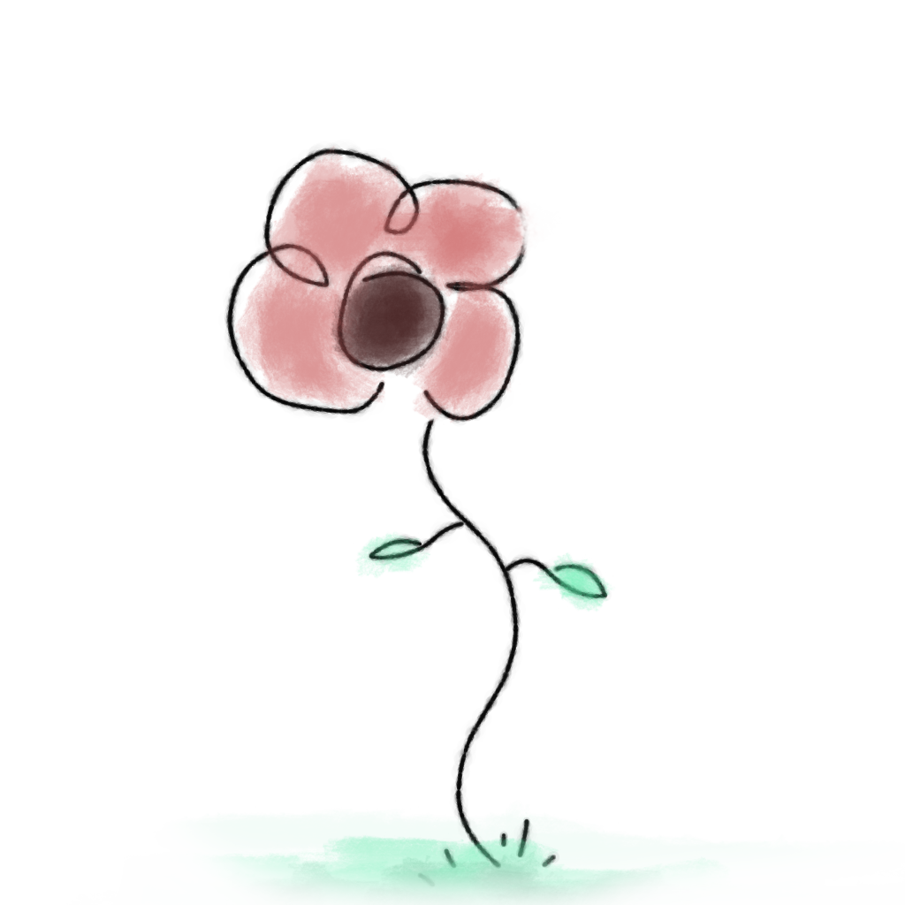
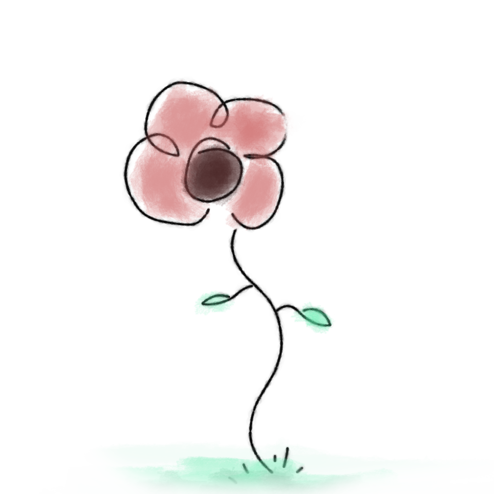

The Projector Companion

CLICK HERE TO OPEN IN GUMROAD
Click the video to open it in youtube!
The companion moves smoothly using a springjoint, which is not quest-compatible. This system allows to only have to render one projector. This makes it easier to add skins or accessories to it. It also makes it easier to animate.
You can change the projector's position from one to another, depending on where you set them. Take note that the companion has a constraint that makes it so it always looks in the same direction as you.
There is also an option to change the facing direction of the projector. take note that if the projector is facing you, the movements following the head will be inverted.
This little projector wouldn't live up too it's name if it didn't emit light! There is an implemented toggle that turns on a light source (spot light) with which you can light up dark worlds.
There is also a built-in hologram projector! You can change it's color or the hologram pattern by checking out the documentation.
How to remove the dissolve
The dissolve works with poiyomi. You will need to go in the FX controller and disable the fading animations' animator layer to make sure that it doesn't play and hide the projector for a few seconds while it moves. First, find your FX layer. You can locate the FX layer by clicking on the root of your avatar in the hierarchy and then look under the VRC Avatar Descriptor component. It should have a tab named "Playable Layers". The one defined for "FX" is your avatar's FX layer.

Once in your avatar's FX controller, if you installed your companion properly, you should be able to find the "Fading" animation layer. Click the options button for that layer.

In the little options menu, just set the weight to 0 and it will deactivate the ghost's fading animations. If you have any problems, please ask in the #help channel of my discord server. (click the discord logo in the header to join it)